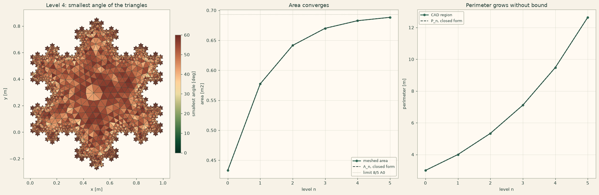

Docs › Examples › Koch snowflake built by recursion
CAD geometry · 2D
Koch snowflake built by recursion
The Koch snowflake from the triangle to level 5 with 3,072 sides, built as planar regions and meshed with triangles.
Run locally with OneSimulation. The example downloads are free. Running them requires an activated runtime. Runtime Alpha 0.2.1a7 · CPython 3.13 on macOS (Apple Silicon), Ubuntu 22.04 (x86-64), and Windows x64. Installation and activation · View pilot plans. Scope of the reference checks.

What it computes
OneSimulation turns the corners of every level of the recursion into a profile and a planar region and meshes each level with triangles that follow all of its short sides. Area, perimeter and centroid come from the exact region.
What it checks
Area and perimeter of all six levels equal the geometric series A_n = A0 (8/5 - 3/5 (4/9)^n) and P_n = 3 s (4/3)^n to 1e-15, the meshed areas agree to the same precision (11,846 triangles at level 5), level 5 reaches 99.35 % of the limit area, and the centroid stays at the centre of the triangle to nine digits.
The notebook
The complete notebook, cell by cell. Run it to produce the figures and the comparison printout.
The Koch snowflake starts from an equilateral triangle of side \(s\). One step of the recursion replaces every side by four sides of a third of its length: the middle third is removed and an equilateral spike is erected outwards on it. After \(n\) steps the outline has \(3\cdot 4^n\) sides of length \(s/3^n\), so the perimeter grows without bound while the area converges.
Step \(k\) adds \(3\cdot 4^{k-1}\) triangles of area \(A_0/9^k\), one on every side. With \(A_0=\sqrt3 s^2/4\) the area after \(n\) steps is the geometric series
and the limit is \(8A_0/5\). The centroid stays in the centre of the triangle, \((s/2,\ s/(2\sqrt3))\), at every level.
Reference. H. von Koch, Sur une courbe continue sans tangente, obtenue par une construction géométrique élémentaire, Arkiv för Matematik, Astronomi och Fysik 1 (1904) 681-702; the area and perimeter series as in B. Mandelbrot, The Fractal Geometry of Nature, Freeman 1982, ch. 6.
import numpy as np
from onesim.cad.d2 import PlanarRegion, Profile
from onesim.meshing import TriangularMesher
from onesim.meshing.quality import quality
from onesim.visualization import plots, theme
theme.set()The recursion
The corners of a level are an array of points in counter-clockwise order. One step takes every side from \(p\) to \(q\) with \(d=q-p\) and inserts three new corners: \(p+d/3\), the apex \(p+d/3+R_{-60^\circ}\,d/3\) (the middle third turned outwards by 60 degrees) and \(p+2d/3\). Five steps give 3072 corners. Each level becomes a profile and a planar region of OneSimulation.
side = 1.0
corners = [side * np.array([(0.0, 0.0), (1.0, 0.0), (0.5, np.sqrt(3) / 2)])]
turn = np.array([[0.5, np.sqrt(3) / 2], [-np.sqrt(3) / 2, 0.5]])
for step in range(5):
p = corners[-1]
d = np.roll(p, -1, axis=0) - p
corners.append(
np.stack(
[p, p + d / 3, p + d / 3 + (d / 3) @ turn.T, p + 2 * d / 3], axis=1
).reshape(-1, 2)
)
regions = [PlanarRegion(profile=Profile.polygon(points)) for points in corners]
print(
", ".join(
f"level {level}: {len(points)} corners" for level, points in enumerate(corners)
)
)Meshes
Every level is meshed with triangles of at most 50 mm. The mesher follows each of the 3072 short sides of the last level, so the triangles become as small as the sides near the outline and grow towards the middle.
meshes = [TriangularMesher(target_size=0.05).generate(region) for region in regions]
fig = plots.figure(1, 2, size=(15, 7))
plots.geometry(
regions[-1], title="Level 5: one planar region, outline 'side'", ax=fig[0]
)
plots.mesh(
meshes[-1],
legend=False,
title=f"Level 5: {meshes[-1].cell_count} triangles",
ax=fig[1],
)
plots.show()
fig = plots.figure(2, 3, size=(16, 10))
for level, region in enumerate(regions):
plots.geometry(
region,
selection={"outline": region.boundaries.all},
labels=False,
title=f"level {level}: {len(corners[level])} sides",
ax=fig[level],
)
plots.show()Results
The area of the region and of its mesh, the perimeter (the length of the one boundary line of the region) and the centroid against the closed form at every level.
area0 = np.sqrt(3) / 4 * side**2
area = lambda n: area0 * (8 / 5 - 3 / 5 * (4 / 9) ** n)
centre = (side / 2, side / (2 * np.sqrt(3)))
print(
"level sides triangles area CAD area mesh closed form deviation perimeter closed form"
)
for level, (region, mesh) in enumerate(zip(regions, meshes)):
print(
f"{level:5d} {len(corners[level]):6d} {mesh.cell_count:10d} {region.measure:10.6f} {quality(mesh)['size'].sum():11.6f}"
f" {area(level):12.6f} {region.measure / area(level) - 1:+11.1e} {region.edges[0].length:10.5f} {3 * side * (4 / 3) ** level:12.5f}"
)
print(
f"limit of the area 8/5 A0 = {8 / 5 * area0:.6f}; level 5 reaches {regions[-1].measure / (8 / 5 * area0):.4%} of it"
)
centroid = Profile.polygon(corners[-1]).section_values().centroid
print(
f"centroid of level 5: ({centroid[0]:.9f}, {centroid[1]:.9f}), centre of the triangle ({centre[0]:.9f}, {centre[1]:.9f})"
)Figure
The smallest angle of each triangle of the mesh of level 4, the meshed area against the closed-form series and the perimeter against the level.
levels = np.arange(len(regions))
fig = plots.figure(1, 3, size=(19, 6))
plots.mesh(
meshes[4],
cell_values=np.degrees(quality(meshes[4])["minimum_angle"]),
limits=(0, 60),
label="smallest angle [deg]",
title="Level 4: smallest angle of the triangles",
ax=fig[0],
)
plots.line(
levels,
{"meshed area": np.array([quality(mesh)["size"].sum() for mesh in meshes])},
reference={"A_n, closed form": (levels, area(levels))},
hlines={"limit 8/5 A0": 8 / 5 * area0},
markers=True,
xlabel="level n",
ylabel="area [m2]",
title="Area converges",
ax=fig[1],
)
plots.line(
levels,
{"CAD region": np.array([region.edges[0].length for region in regions])},
reference={"P_n, closed form": (levels, 3 * side * (4 / 3) ** levels)},
markers=True,
xlabel="level n",
ylabel="perimeter [m]",
title="Perimeter grows without bound",
ax=fig[2],
)
plots.show()Going further
Extrude a level with Prism(profile=Profile.polygon(corners[3]), height=0.1) for a fractal column, compute the lowest membrane eigenvalues of the levels with onesim.physics.acoustics to see how the boundary shifts the spectrum, or replace the 60 degree spike by another angle for the Cesàro variants of the curve.